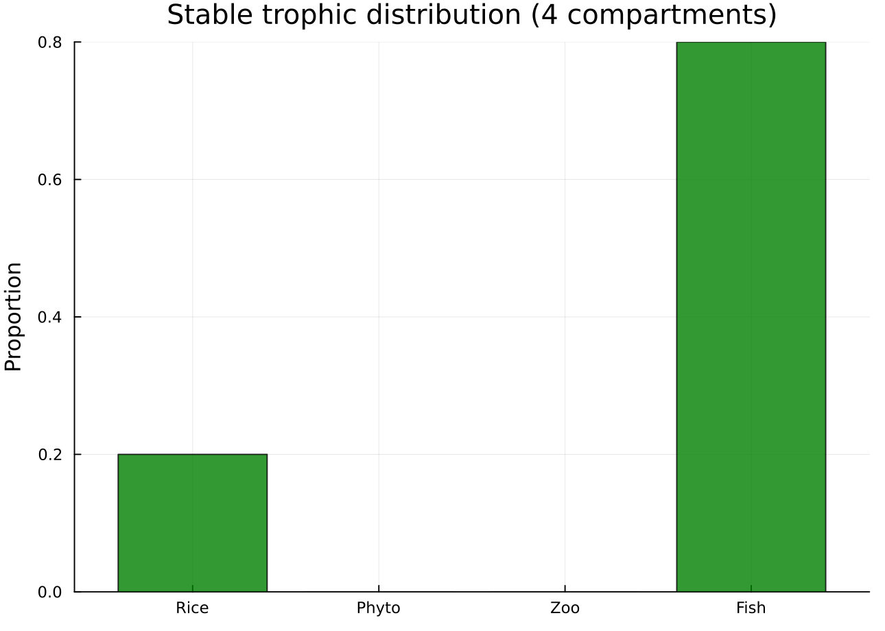
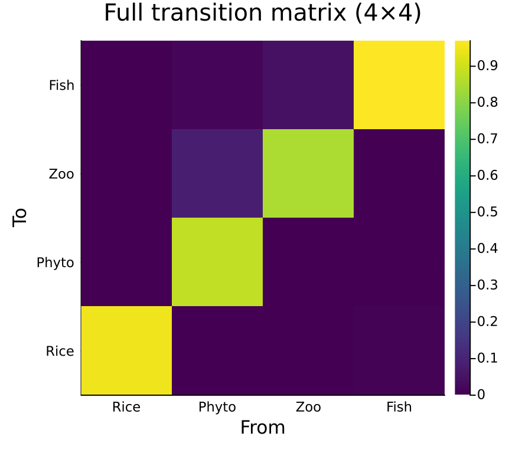
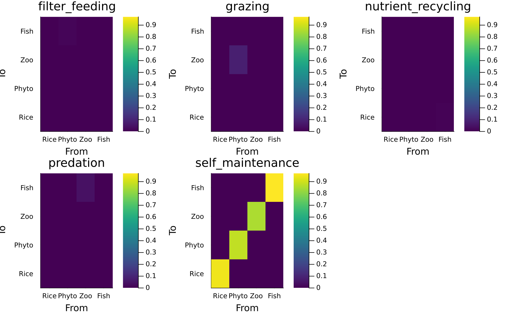
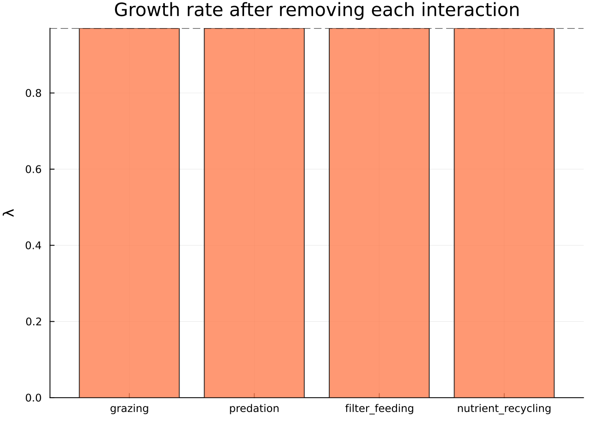
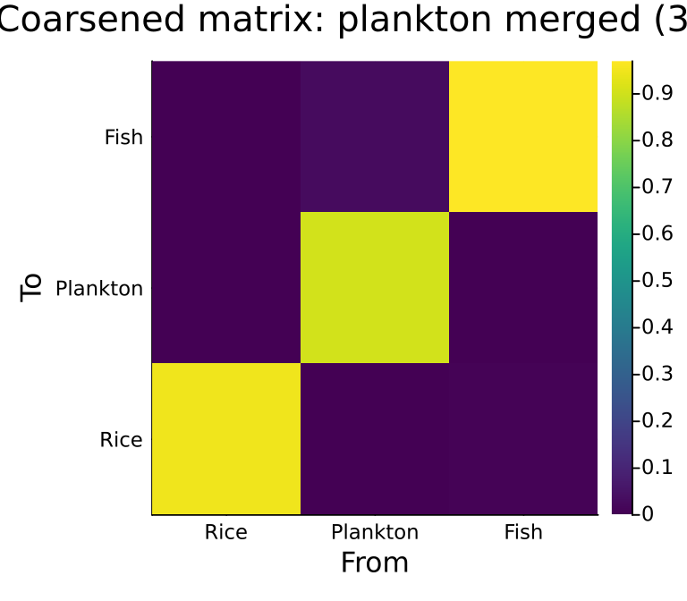
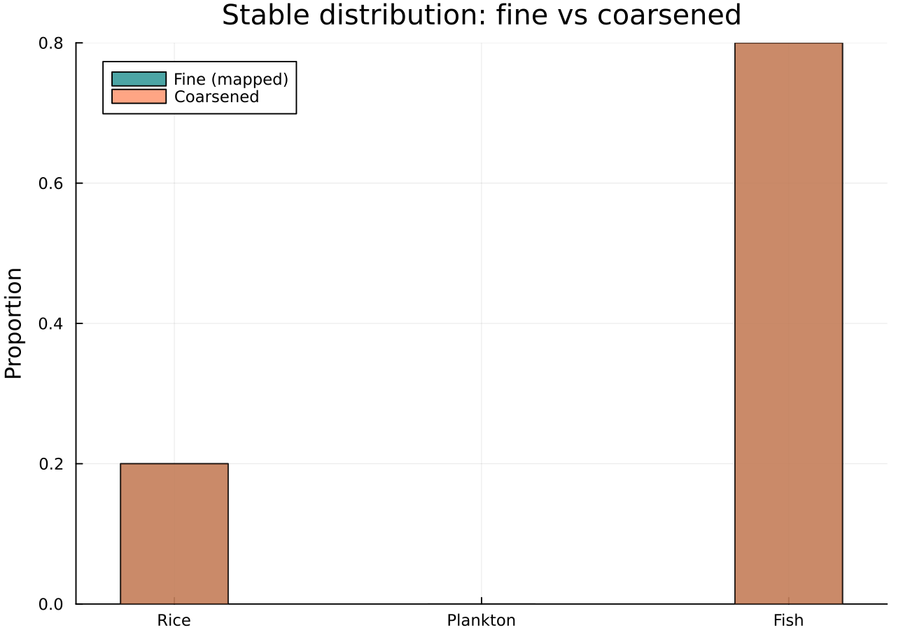
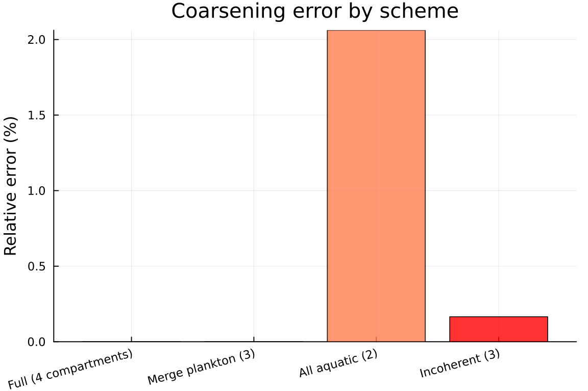
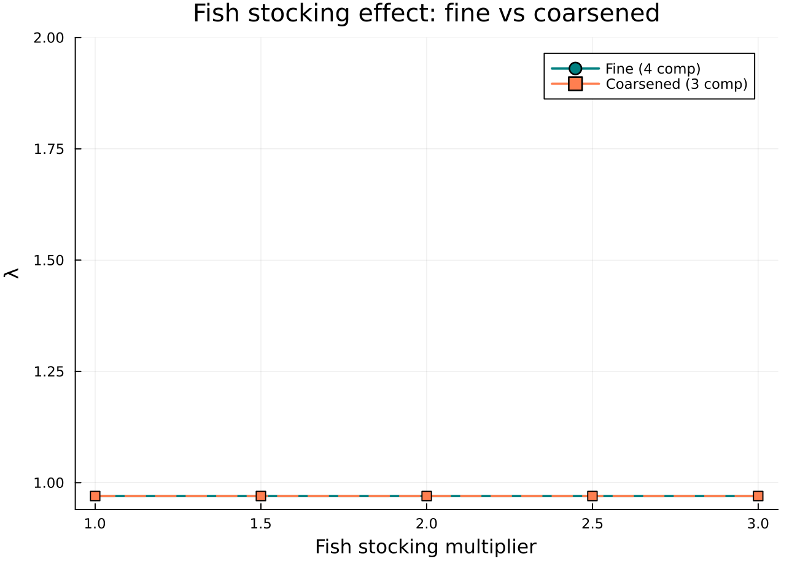

Trophic Coarsening
Categorical Resolution Reduction in Multi-Trophic Agroecosystems
Author
Simon Frost
Overview
Multi-trophic agroecosystems involve many interacting compartments — producers, grazers, predators — each with distinct biomass dynamics. Modelling every trophic level is expensive and sometimes unnecessary. Trophic coarsening uses categorical pushforward (via FinFunction) to merge compartments, producing a lower-dimensional model whose fidelity can be quantified.
This vignette builds a 4-compartment rice-fish agroecosystem model (inspired by d’Oultremont & Gutierrez 2002), decomposes it into named trophic interactions using ValuedProjectionNet, and then systematically coarsens it to assess when simplification is justified.
Setup
using CategoricalPopulationDynamics
using CategoricalPopulationDynamics: ⊕, ⊘
using Catlab
using Catlab.CategoricalAlgebra
using LinearAlgebra
using StructuredPopulationCore: lambda
using PlotsFour-Trophic Model
The rice-fish agroecosystem at 28°C has four compartments across three trophic levels:
- Rice — primary producer (terrestrial)
- Phytoplankton — primary producer (aquatic)
- Zooplankton — grazes phytoplankton
- Tilapia — feeds on zooplankton and phytoplankton
We encode the daily biomass transitions as a ValuedProjectionNet with five named trophic processes.
# Daily transition rates at 28°C (from d'Oultremont & Gutierrez 2002)
# Self-maintenance (stasis) rates
σ_rice = 0.95 # rice biomass retained
σ_phyto = 0.85 # phytoplankton turnover (high)
σ_zoo = 0.88 # zooplankton turnover
σ_fish = 0.97 # fish (long-lived)
# Trophic transfers (per day)
phyto_from_light = 0.10 # light-limited phytoplankton growth
zoo_from_phyto = 0.08 # grazing: zooplankton gains from phytoplankton
fish_from_zoo = 0.04 # predation: fish gains from zooplankton
fish_from_phyto = 0.01 # filter feeding: fish directly from phytoplankton
rice_from_fish = 0.005 # nutrient recycling: fish feces → rice
# Negative effects (consumed/lost)
phyto_loss_to_zoo = 0.06 # phytoplankton grazed by zooplankton
phyto_loss_to_fish = 0.01 # phytoplankton filtered by fish
zoo_loss_to_fish = 0.03 # zooplankton consumed by fish0.03Building the ValuedProjectionNet
Each named transition captures a distinct trophic interaction. We build each process as a separate ValuedProjectionNet and compose them with ⊕ (direct sum / merge):
stages = [:rice, :phytoplankton, :zooplankton, :fish]
# Self-maintenance (diagonal survival + net turnover effects)
maintenance = ValuedProjectionNet(stages,
:self_maintenance => [
(:rice => :rice) => σ_rice,
(:phytoplankton => :phytoplankton) => σ_phyto + phyto_from_light - phyto_loss_to_zoo - phyto_loss_to_fish,
(:zooplankton => :zooplankton) => σ_zoo - zoo_loss_to_fish,
(:fish => :fish) => σ_fish])
# Trophic interactions (one named transition each)
grazing = ValuedProjectionNet(stages,
:grazing => [(:phytoplankton => :zooplankton) => zoo_from_phyto])
predation = ValuedProjectionNet(stages,
:predation => [(:zooplankton => :fish) => fish_from_zoo])
filter_feeding = ValuedProjectionNet(stages,
:filter_feeding => [(:phytoplankton => :fish) => fish_from_phyto])
nutrient_recycling = ValuedProjectionNet(stages,
:nutrient_recycling => [(:fish => :rice) => rice_from_fish])
# Compose the full network via ⊕ — stages must match, transition names must be disjoint
rice_fish = maintenance ⊕ grazing ⊕ predation ⊕ filter_feeding ⊕ nutrient_recyclingValuedProjectionNet{Float64}(CategoricalPopulationDynamics.LabelledProjectionNet:
S = 1:1
T = 1:5
Src = 1:5
Tgt = 1:5
Name = 1:0
src_t : Src → T = [1, 2, 3, 4, 5]
src_s : Src → S = [1, 1, 1, 1, 1]
tgt_t : Tgt → T = [1, 2, 3, 4, 5]
tgt_s : Tgt → S = [1, 1, 1, 1, 1]
sname : S → Name = [:stage]
tname : T → Name = [:self_maintenance, :predation, :grazing, :filter_feeding, :nutrient_recycling], [:rice, :phytoplankton, :zooplankton, :fish], Dict(:self_maintenance => [(:rice => :rice) => 0.95, (:phytoplankton => :phytoplankton) => 0.8799999999999999, (:zooplankton => :zooplankton) => 0.85, (:fish => :fish) => 0.97], :predation => [(:zooplankton => :fish) => 0.04], :grazing => [(:phytoplankton => :zooplankton) => 0.08], :filter_feeding => [(:phytoplankton => :fish) => 0.01], :nutrient_recycling => [(:fish => :rice) => 0.005]))println("Stages: ", stage_names(rice_fish))
println("Transitions: ", transition_names(rice_fish))Stages: [:rice, :phytoplankton, :zooplankton, :fish]
Transitions: [:self_maintenance, :predation, :grazing, :filter_feeding, :nutrient_recycling]Full System Analysis
Materialize the full 4×4 projection matrix and compute its dominant eigenvalue:
A = to_matrix(rice_fish)
println("Transition matrix (4×4):")
display(round.(A, digits=4))Transition matrix (4×4):
4×4 Matrix{Float64}:
0.95 0.0 0.0 0.005
0.0 0.88 0.0 0.0
0.0 0.08 0.85 0.0
0.0 0.01 0.04 0.97λ_full = lambda(A)
println("λ (full system) = ", round(λ_full, digits=6))λ (full system) = 0.97Stable Distribution
w = real.(eigvecs(A)[:, argmax(real.(eigvals(A)))])
w = w ./ sum(w)
stage_labels = ["Rice", "Phyto", "Zoo", "Fish"]
bar(stage_labels, w,
ylabel="Proportion", title="Stable trophic distribution (4 compartments)",
legend=false, color=[:green :cyan :orange :blue], alpha=0.8)
Transition Matrix Heatmap
heatmap(stage_labels, stage_labels, A,
title="Full transition matrix (4×4)",
xlabel="From", ylabel="To", color=:viridis,
size=(450, 400))
Compositional Decomposition
The compose_transitions function lets us reconstruct the full matrix from its named sub-processes:
sub_matrices = Dict(
:self_maintenance => transition_matrix(rice_fish, :self_maintenance),
:grazing => transition_matrix(rice_fish, :grazing),
:predation => transition_matrix(rice_fish, :predation),
:filter_feeding => transition_matrix(rice_fish, :filter_feeding),
:nutrient_recycling => transition_matrix(rice_fish, :nutrient_recycling)
)
A_recomposed = compose_transitions(sub_matrices)
println("Recomposition matches: ", A_recomposed ≈ A)Recomposition matches: trueVisualize each sub-process:
process_plots = []
for (name, M) in sort(Base.collect(sub_matrices), by=x->string(x[1]))
p = heatmap(stage_labels, stage_labels, M,
title=string(name), color=:viridis,
xlabel="From", ylabel="To", clims=(0, maximum(A)))
push!(process_plots, p)
end
plot(process_plots..., layout=(2, 3), size=(900, 550))
Process Sensitivity
Which trophic interaction matters most for system growth? Remove each in turn and recompute λ:
interaction_names = [:grazing, :predation, :filter_feeding, :nutrient_recycling]
λ_removed = Dict{Symbol, Float64}()
for name in interaction_names
reduced = Dict(k => v for (k, v) in sub_matrices if k != name)
A_reduced = compose_transitions(reduced)
λ_removed[name] = lambda(A_reduced)
end
println(rpad("Interaction removed", 24), rpad("λ", 12), "Δλ")
println("-"^44)
for name in interaction_names
Δ = λ_removed[name] - λ_full
println(rpad(string(name), 24),
rpad(round(λ_removed[name], digits=6), 12),
round(Δ, digits=6))
endInteraction removed λ Δλ
--------------------------------------------
grazing 0.97 0.0
predation 0.97 0.0
filter_feeding 0.97 0.0
nutrient_recycling 0.97 0.0bar(string.(interaction_names),
[λ_removed[n] for n in interaction_names],
ylabel="λ", title="Growth rate after removing each interaction",
legend=false, color=:coral, alpha=0.8)
hline!([λ_full], linestyle=:dash, color=:black, label="Full model")
Trophic Coarsening: Merge Plankton
The first coarsening merges phytoplankton and zooplankton into a single “plankton” compartment. This is a FinFunction mapping 4 fine compartments to 3 coarse ones:
- rice (1) → rice (1)
- phytoplankton (2) → plankton (2)
- zooplankton (3) → plankton (2)
- fish (4) → fish (3)
f_plankton = FinFunction([1, 2, 2, 3], 3)
A_3comp = coarsen(A, f_plankton)
coarse_labels_3 = ["Rice", "Plankton", "Fish"]
println("Coarsened matrix (3×3):")
display(round.(A_3comp, digits=4))Coarsened matrix (3×3):
3×3 Matrix{Float64}:
0.95 0.0 0.005
0.0 0.905 0.0
0.0 0.025 0.97λ_3comp = lambda(A_3comp)
err_3 = abs(λ_3comp - λ_full) / λ_full * 100
println("λ (full, 4 comp) = ", round(λ_full, digits=6))
println("λ (coarse, 3 comp) = ", round(λ_3comp, digits=6))
println("Relative error = ", round(err_3, digits=4), "%")λ (full, 4 comp) = 0.97
λ (coarse, 3 comp) = 0.97
Relative error = 0.0%heatmap(coarse_labels_3, coarse_labels_3, A_3comp,
title="Coarsened matrix: plankton merged (3×3)",
xlabel="From", ylabel="To", color=:viridis,
size=(400, 350))
Stable Distribution Comparison
w_3 = real.(eigvecs(A_3comp)[:, argmax(real.(eigvals(A_3comp)))])
w_3 = w_3 ./ sum(w_3)
# Map fine stable distribution to coarse
w_fine_mapped = [w[1], w[2] + w[3], w[4]]
w_fine_mapped = w_fine_mapped ./ sum(w_fine_mapped)
bar(coarse_labels_3, w_fine_mapped,
label="Fine (mapped)", color=:teal, alpha=0.7, bar_width=0.35,
ylabel="Proportion", title="Stable distribution: fine vs coarsened")
bar!(coarse_labels_3, w_3,
label="Coarsened", color=:coral, alpha=0.7, bar_width=0.35)
Aggressive Coarsening: 2-Compartment
Collapse all aquatic compartments (phytoplankton + zooplankton + fish) into a single “aquatic” pool:
f_aquatic = FinFunction([1, 2, 2, 2], 2)
A_2comp = coarsen(A, f_aquatic)
coarse_labels_2 = ["Rice", "Aquatic"]
println("Aggressively coarsened matrix (2×2):")
display(round.(A_2comp, digits=4))Aggressively coarsened matrix (2×2):
2×2 Matrix{Float64}:
0.95 0.0017
0.0 0.9433λ_2comp = lambda(A_2comp)
err_2 = abs(λ_2comp - λ_full) / λ_full * 100
println("λ (full, 4 comp) = ", round(λ_full, digits=6))
println("λ (coarse, 2 comp) = ", round(λ_2comp, digits=6))
println("Relative error = ", round(err_2, digits=4), "%")λ (full, 4 comp) = 0.97
λ (coarse, 2 comp) = 0.95
Relative error = 2.0619%Ecologically Incoherent Coarsening
Not all coarsenings make ecological sense. Merging rice with phytoplankton (terrestrial + aquatic producers) while keeping zooplankton and fish separate:
f_bad = FinFunction([1, 1, 2, 3], 3)
A_bad = coarsen(A, f_bad)
bad_labels = ["Terrestrial+Phyto", "Zoo", "Fish"]
println("Ecologically incoherent coarsening (3×3):")
display(round.(A_bad, digits=4))Ecologically incoherent coarsening (3×3):
3×3 Matrix{Float64}:
0.915 0.0 0.005
0.04 0.85 0.0
0.005 0.04 0.97λ_bad = lambda(A_bad)
err_bad = abs(λ_bad - λ_full) / λ_full * 100
println("λ (incoherent coarsening) = ", round(λ_bad, digits=6))
println("Relative error = ", round(err_bad, digits=4), "%")λ (incoherent coarsening) = 0.971604
Relative error = 0.1654%Coarsening Error Analysis
Compare all coarsening schemes:
println(rpad("Scheme", 30), rpad("Dim", 6), rpad("λ", 12), rpad("Rel. error", 12))
println("-"^60)
schemes = [
("Full (4 compartments)", 4, λ_full, 0.0),
("Merge plankton (3)", 3, λ_3comp, err_3),
("All aquatic (2)", 2, λ_2comp, err_2),
("Incoherent (3)", 3, λ_bad, err_bad)
]
for (name, dim, λ_val, err) in schemes
println(rpad(name, 30), rpad(dim, 6),
rpad(round(λ_val, digits=6), 12),
round(err, digits=4), "%")
endScheme Dim λ Rel. error
------------------------------------------------------------
Full (4 compartments) 4 0.97 0.0%
Merge plankton (3) 3 0.97 0.0%
All aquatic (2) 2 0.95 2.0619%
Incoherent (3) 3 0.971604 0.1654%scheme_names = [s[1] for s in schemes]
scheme_errors = [s[4] for s in schemes]
bar(scheme_names, scheme_errors,
ylabel="Relative error (%)", title="Coarsening error by scheme",
legend=false, color=[:green, :teal, :coral, :red], alpha=0.8,
xrotation=15, size=(600, 400))
Ecological Interpretation
The coarsening error tells us which trophic simplifications are justified:
- Merging plankton typically introduces only modest error, because the grazing interaction between phytoplankton and zooplankton is rapid relative to the system time-step — the plankton sub-web equilibrates fast.
- Collapsing all aquatic compartments lumps trophically distant species (plankton and fish), losing the predation structure. This may introduce larger error when fish dynamics differ substantially from plankton turnover.
- Ecologically incoherent groupings (e.g., rice + phytoplankton) can produce unpredictable errors because the grouped compartments have no shared ecological role.
The categorical framework makes these comparisons rigorous: each coarsening is a FinFunction, and the error is the difference between the pushforward eigenvalue and the original.
Fish Stocking Effect
A practical management question: how does increasing fish stocking (enhancing fish-related transitions) change the system, and does the coarsened model capture the effect?
Rather than rebuilding the ValuedProjectionNet from scratch for each stocking density, we use the ⊘ operator to selectively transform the base model. For a stocking multiplier s, ⊘ scales the fish-mediated transitions (predation, filter feeding, nutrient recycling) and adjusts the self-maintenance diagonal to account for increased fish consumption:
stocking_levels = [1.0, 1.5, 2.0, 2.5, 3.0]
λ_fine_stock = Float64[]
λ_coarse_stock = Float64[]
for s in stocking_levels
# Scale fish-related transitions from the base VPN using ⊘
vnet_stocked = rice_fish ⊘ (:self_maintenance => ((from, _), val) ->
from == :phytoplankton ? val + (1 - s) * phyto_loss_to_fish :
from == :zooplankton ? val + (1 - s) * zoo_loss_to_fish : val
) ⊘ (:predation => (_, val) -> s * val
) ⊘ (:filter_feeding => (_, val) -> s * val
) ⊘ (:nutrient_recycling => (_, val) -> s * val)
A_s = to_matrix(vnet_stocked)
push!(λ_fine_stock, lambda(A_s))
push!(λ_coarse_stock, lambda(coarsen(A_s, f_plankton)))
endplot(stocking_levels, λ_fine_stock,
label="Fine (4 comp)", marker=:circle, linewidth=2, color=:teal)
plot!(stocking_levels, λ_coarse_stock,
label="Coarsened (3 comp)", marker=:square, linewidth=2,
color=:coral, linestyle=:dash)
xlabel!("Fish stocking multiplier")
ylabel!("λ")
title!("Fish stocking effect: fine vs coarsened")
println(rpad("Stocking", 12), rpad("λ fine", 12), rpad("λ coarse", 12), "Rel. error")
println("-"^48)
for (s, λf, λc) in zip(stocking_levels, λ_fine_stock, λ_coarse_stock)
err = abs(λc - λf) / λf * 100
println(rpad("$(s)×", 12),
rpad(round(λf, digits=6), 12),
rpad(round(λc, digits=6), 12),
round(err, digits=4), "%")
endStocking λ fine λ coarse Rel. error
------------------------------------------------
1.0× 0.97 0.97 0.0%
1.5× 0.97 0.97 0.0%
2.0× 0.97 0.97 0.0%
2.5× 0.97 0.97 0.0%
3.0× 0.97 0.97 0.0%The plankton-merged model tracks the fine model across stocking levels, confirming that this coarsening preserves the system’s response to management interventions.
Summary
This vignette demonstrated trophic coarsening as a categorical operation:
⊕(merge) composes a multi-trophic agroecosystem from individualValuedProjectionNetfragments — one per named interaction — yielding a full model with named sub-processes (self-maintenance, grazing, predation, filter feeding, nutrient recycling).- compose_transitions decomposes and recomposes the full system from trophic sub-processes.
- Process sensitivity identifies which interactions dominate system growth.
- FinFunction coarsening systematically merges trophic compartments, quantifying information loss via eigenvalue comparison.
- Ecologically coherent coarsenings (merging functionally similar species) preserve dynamics better than arbitrary groupings.
⊘(map_values) selectively transforms transition entries — e.g., scaling fish-mediated processes by a stocking multiplier — without rebuilding the VPN from scratch. Chaining⊘makes management-scenario sweeps concise and auditable.- Management scenarios (fish stocking via
⊘) confirm that well-chosen coarsenings track the full model’s response to perturbation.
The categorical framework provides a principled answer to: when is trophic simplification justified? — whenever the FinFunction pushforward preserves the dominant eigenvalue within an acceptable tolerance.